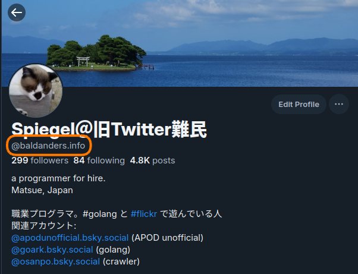
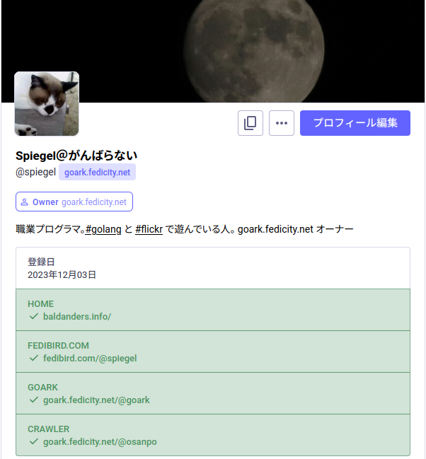

Bluesky 上で起きたなりすましとサイバースクワッティング

興味深い話なので覚え書きとして記しておく。
- So, Bluesky Has An Extortion Problem
- Blueskyの「ドメインを用いた本人証明システム」が悪用され「著名人の名前でドメインを取得して本物に買取りを要求する」という事件が発生 - GIGAZINE
まず前提として， Bluesky ではユーザ本人の証明として実在のドメイン名をハンドル名として紐付けることができる。 例えば私の場合はこんな感じ。

今回のケースでは，誰かが Bloomberg のコラムニスト Conor Sen 氏の名前を使ったドメイン名 conorsen.com を取得し，これを使って Bluesky アカウントを作成したことから始まる。
ちなみに Conor Sen 氏本人は @conorsen.bsky.social というアカウントを運用している。
偽アカウント作成者は Conor Sen 氏に対し，このドメインと Bluesky アカウントを買い取るよう要求してきた。 まぁ，ここまではよくあるサイバースクワッティング（cybersquatting）の事例である。
ここからが面白くて，さらに The Hustle の founder である Sam Parr 氏（有名らしい，私は知らんけど）の偽 Bluesky アカウントが登場する。 この偽物氏は上述の脅迫者に同調し，オンライン上の身元を気にするなら Conor Sen 氏は金を払うべきだとか言ったらしい。 こうして偽 Sam Parr 氏と他ユーザとのやり合いが始まった。
さらにさらに，ここで本物の Sam Parr 氏が Bluesky に登場。 偽物氏は本物の Sam Parr 氏にドメインとアカウントを買い取るよう要求する。
このように，有名人の複数偽 Bluesky アカウントを作成・連動させ本物達からお金を巻き上げる手口らしい。 偽アカウントは独自ドメインで紐付けされているため本物より本物らしく見えるところがポイントである。
本物氏は当然ながらこれに抗議して Bluesky 側に偽アカウントをブロックするよう要請した。 そしてどうなったかというと Bluesky 側は本物のアカウントの方をブロックしちゃったらしい。 独自ドメインで紐付けされてる偽物を信用しちゃったわけだ。
既に十分なブランド力を持つドメインを Bluesky アカウントと連携させるのは，上手いやり方だろう。
たとえば，私がフォローしている河出書房新社（@kawade.co.jp）や早川書房（@hayakawa-online.co.jp）などは疑いようもない。
また hololive 所属の VTuber である「大神ミオ」は hololive.tv のサブドメインを使って @ookamimio.hololive.tv としている。
企業所属のユーザなんかは参考になると思う。
でも Bluesky アカウントのために新たにドメインを取得しても本人証明としては大して役に立っていない，ということが今回のケースを通して改めて分かった。 なりすましやサイバースクワッティングに対する抑止力になっていないのだ。 それとも Bluesky が詐欺や脅迫の現場となるまでに成長したと褒めるべきだろうか（笑）
特に SNS や（𝕏 のような）マイクロブログサービスや YouTube/Instagram/TikTok などで囲い込まれて自前ドメインの Web サイトもないユーザは他サービスとの連携が薄い。 例えば「𝕏 はアカン」と思って Bluesky に行っても 𝕏 のアカウントと Bluesky アカウントが同一ユーザであることを証明する方法はない。 だから今回のようなケースも起こり得るわけだ。
SNS における「ネットワーク効果」によって他サービスへの移行が難しくなるという話はよく聞くが，移行前後でアイデンティティの同一性を保てなくなるというのもスイッチング・コストのひとつなのかも知れない。
Mastodon は Web ページ上の <link> 要素や <a> 要素に rel="me" の属性を付与することでサービス間で緩く連携できる。

でもこれも他の SNS などとはまず連携できない。 𝕏 から移住してきても同一ユーザであることを証明することはできないのだ。
最初に挙げた Tedium の記事では
It’s a goddamn mess, and it makes me appreciate why some people may want to skip Bluesky altogether. I’ve been a booster of the network so far—but they need to get this figured out, or all the prominent people who have put their stake over here may find themselves looking for the exits.
と締めているが，なかなか厳しいんじゃないかなぁ。
一応 Bluesky 側は先月末の時点でモデレーションチームを4倍（100人）に増やしたそうで，なりすましやサイバースクワッティングに対しても積極的に対処するとのこと。
冤罪の BAN も増えそうな気がするが，どうなることやら。